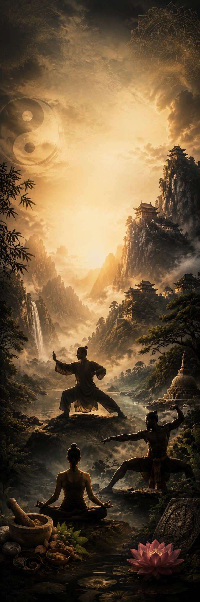
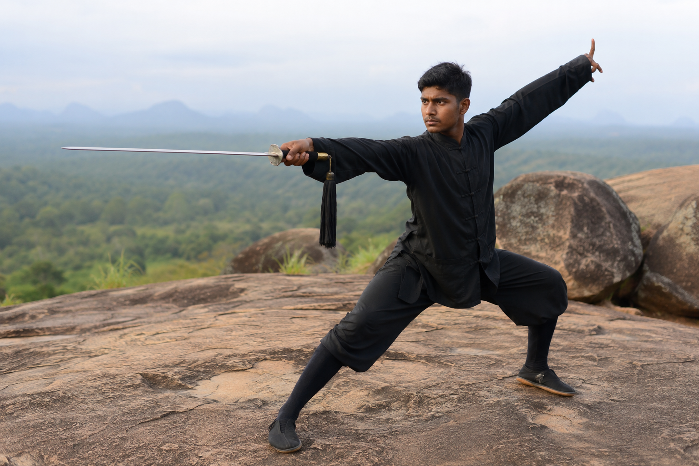
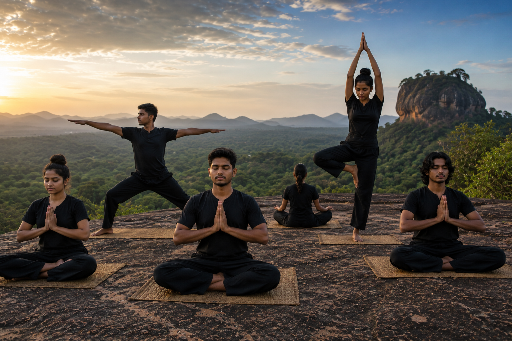
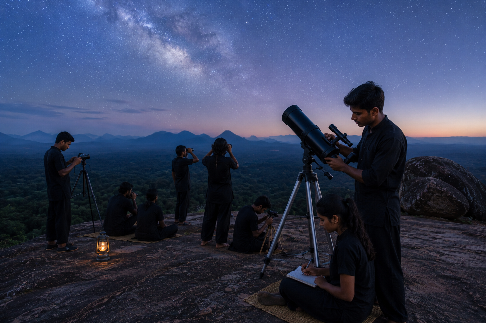

Wudang Martial Arts
Research on internal martial arts, history, philosophy, training methods and cultural heritage.
Learn More
Research • Martial Arts • Ayurveda • Meditation
The Ceylon Wudang Wushu Research Centre is dedicated to preserving, researching and promoting Wudang Martial Arts, Traditional Sri Lankan Ayurveda, Meditation, Traditional Healing and Holistic Studies for future generations.
Research and preservation of traditional Wudang internal martial arts.
Exploring traditional healing knowledge and natural wellness systems.
Study of meditation, breathing practices and mind cultivation.
Exploring ancient wisdom through research, practice and preservation of traditional knowledge systems.
Research on internal martial arts, history, philosophy, training methods and cultural heritage.
Learn MoreResearch on Traditional Sri Lankan Ayurveda, herbal knowledge, natural healing and wellness practices.
Learn MoreResearch on meditation, breathing techniques, Qi cultivation and mindfulness.
Learn MoreStructured programmes designed to develop discipline, physical skills, internal cultivation and traditional knowledge through a progressive learning system.
Foundation training including basic movements, discipline and traditional principles.
Development of techniques, forms, conditioning and deeper practice.
Advanced martial training, internal cultivation and research-based practice.
Training future instructors with knowledge, leadership and teaching methods.
Integrating Traditional Sri Lankan Ayurveda with Wudang health preservation methods to support physical, mental and holistic wellbeing.
Our research focuses on preventive healthcare, herbal knowledge, traditional healing methods, rehabilitation and holistic wellness through ancient wisdom and modern research.
Explore moments from our research activities, training programmes, workshops and traditional knowledge studies.

Internal Martial Arts Research

Traditional Healing Knowledge
Sri Lankan Traditional Combat Art

Body & Mind Development

Mindfulness & Energy Practice

Ancient Knowledge Studies
We welcome researchers, students, practitioners and collaborators interested in preserving and promoting traditional knowledge.
info@cwwrc.org
CWWRC
Sri Lanka